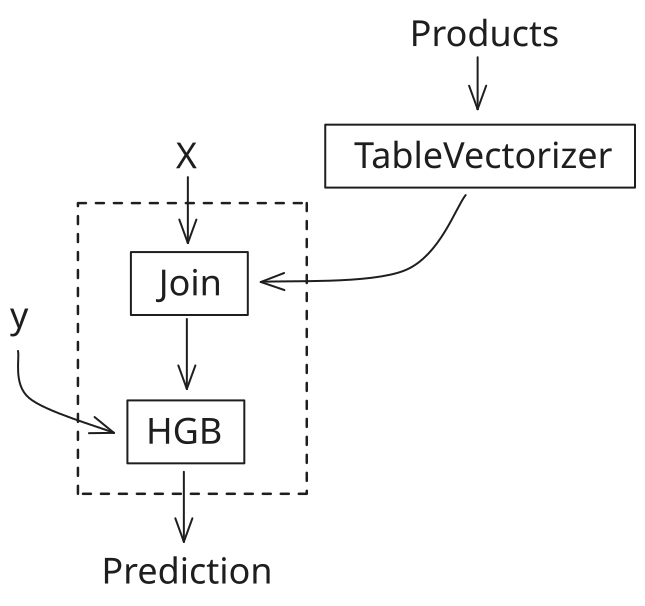
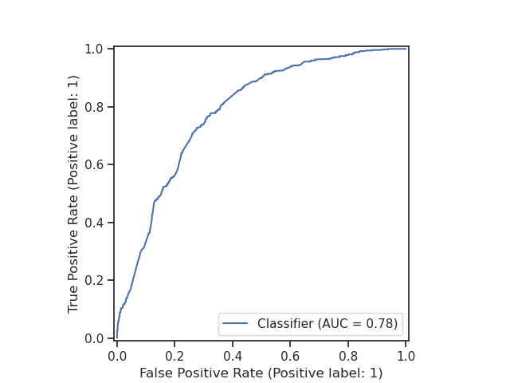

Note
Go to the end to download the full example code or to run this example in your browser via JupyterLite or Binder.
Multiples tables: building machine learning pipelines with DataOps#
In this example, we show how to build a DataOps plan to handle pre-processing, validation and hyperparameter tuning of a dataset with multiple tables.
We consider the credit fraud dataset, which contains two tables: one for baskets (orders) and one for products. The goal is to predict whether a basket (a single order that has been placed with the website) is fraudulent or not, based on the products it contains.
The credit fraud dataset#
We fetch the credit fraud dataset using fetch_credit_fraud. This dataset
contains two tables: baskets and products. We load the training split
of the dataset to train the model. At the end of the example, we will load
the test split to evaluate the model on unseen data.
import pandas as pd
import skrub
import skrub.datasets
dataset = skrub.datasets.fetch_credit_fraud(split="train")
We define two skrub variables that store the content of the two csv files. These variables will be used as inputs to the DataOps plan we will build. Later, when we want to apply the resulting model to new data, we will need to provide dataframes to the same variables, but with the content of the test split of the dataset instead.
baskets = skrub.var("baskets", pd.read_csv(dataset.baskets_path))
products = skrub.var("products", pd.read_csv(dataset.products_path))
Now we can use the TableReport provided by the Data Ops to inspect the two tables.
The baskets table contains the list of basket IDs, and a fraud flag indicating
whether the basket is fraudulent or not.
Show graph
| ID | fraud_flag | |
|---|---|---|
| 0 | 51,113 | 0 |
| 1 | 41,798 | 0 |
| 2 | 39,361 | 0 |
| 3 | 38,615 | 0 |
| 4 | 70,262 | 0 |
| 61,236 | 21,243 | 0 |
| 61,237 | 45,891 | 0 |
| 61,238 | 42,613 | 0 |
| 61,239 | 43,567 | 0 |
| 61,240 | 68,268 | 0 |
ID
Int64DType- Null values
- 0 (0.0%)
- Unique values
-
61,241 (100.0%)
This column has a high cardinality (> 40).
- Mean ± Std
- 3.82e+04 ± 2.21e+04
- Median ± IQR
- 38,158 ± 38,196
- Min | Max
- 0 | 76,543
fraud_flag
Int64DType- Null values
- 0 (0.0%)
- Unique values
- 2 (< 0.1%)
- Mean ± Std
- 0.0130 ± 0.113
- Median ± IQR
- 0 ± 0
- Min | Max
- 0 | 1
No columns match the selected filter: . You can change the column filter in the dropdown menu above.
| Column | Column name | dtype | Is sorted | Null values | Unique values | Mean | Std | Min | Median | Max |
|---|---|---|---|---|---|---|---|---|---|---|
| 0 | ID | Int64DType | False | 0 (0.0%) | 61241 (100.0%) | 3.82e+04 | 2.21e+04 | 0 | 38,158 | 76,543 |
| 1 | fraud_flag | Int64DType | False | 0 (0.0%) | 2 (< 0.1%) | 0.0130 | 0.113 | 0 | 0 | 1 |
No columns match the selected filter: . You can change the column filter in the dropdown menu above.
Please enable javascript
The skrub table reports need javascript to display correctly. If you are displaying a report in a Jupyter notebook and you see this message, you may need to re-execute the cell or to trust the notebook (button on the top right or "File > Trust notebook").
We mark the “ID” column of the baskets table as X, and the
"fraud_flag" column as y. This allows the Data Ops to track the indices
of the variables when splitting for cross-validation.
so that DataOps can use their indices for train-test splitting and cross-validation.
basket_ids = baskets[["ID"]].skb.mark_as_X()
fraud_flags = baskets["fraud_flag"].skb.mark_as_y()
The products table contains information about the products that have been
purchased, and the basket they belong to. A basket contains at least one product.
Products can be associated with the corresponding basket through the “basket_ID”
column.
Show graph
| basket_ID | item | cash_price | make | model | goods_code | Nbr_of_prod_purchas | |
|---|---|---|---|---|---|---|---|
| 0 | 51,113 | COMPUTER PERIPHERALS ACCESSORIES | 409 | APPLE | APPLE WATCH SERIES 6 GPS 44MM SPACE GREY ALUMINIUM | 239001518 | 1 |
| 1 | 41,798 | COMPUTERS | 1,187 | APPLE | 2020 APPLE MACBOOK PRO 13 TOUCH BAR M1 PROCESSOR 8 | 239246780 | 1 |
| 2 | 39,361 | COMPUTERS | 898 | APPLE | 2020 APPLE MACBOOK AIR 13 3 RETINA DISPLAY M1 PROC | 239246776 | 1 |
| 3 | 38,615 | COMPUTER PERIPHERALS ACCESSORIES | 379 | APPLE | APPLE WATCH SERIES 6 GPS 40MM BLUE ALUMINIUM CASE | 239001540 | 1 |
| 4 | 70,262 | COMPUTERS | 1,899 | APPLE | 2021 APPLE MACBOOK PRO 14 M1 PRO PROCESSOR 16GB RA | 240575990 | 1 |
| 109,375 | 42,613 | BEDROOM FURNITURE | 259 | SILENTNIGHT | SILENTNIGHT SLEEP GENIUS FULL HEIGHT HEADBOARD DOU | 236938439 | 1 |
| 109,376 | 42,613 | OUTDOOR FURNITURE | 949 | LG OUTDOOR | LG OUTDOOR BERGEN 2-SEAT GARDEN SIDE TABLE RECLINI | 239742814 | 1 |
| 109,377 | 43,567 | COMPUTERS | 1,099 | APPLE | 2021 APPLE IPAD PRO 12 9 M1 PROCESSOR IOS WI-FI 25 | 240040978 | 1 |
| 109,378 | 43,567 | COMPUTERS | 2,099 | APPLE | 2020 APPLE IMAC 27 ALL-IN-ONE INTEL CORE I7 8GB RA | 238923518 | 1 |
| 109,379 | 68,268 | TELEVISIONS HOME CINEMA | 799 | LG | LG OLED48A16LA 2021 OLED HDR 4K ULTRA HD SMART TV | 239866717 | 1 |
basket_ID
Int64DType- Null values
- 0 (0.0%)
- Unique values
-
61,241 (56.0%)
This column has a high cardinality (> 40).
- Mean ± Std
- 3.59e+04 ± 2.24e+04
- Median ± IQR
- 35,203 ± 39,444
- Min | Max
- 0 | 76,543
item
StringDtype- Null values
- 0 (0.0%)
- Unique values
-
166 (0.2%)
This column has a high cardinality (> 40).
cash_price
Int64DType- Null values
- 0 (0.0%)
- Unique values
-
1,280 (1.2%)
This column has a high cardinality (> 40).
- Mean ± Std
- 672. ± 714.
- Median ± IQR
- 499 ± 1,049
- Min | Max
- 0 | 18,349
make
StringDtype- Null values
- 1,273 (1.2%)
- Unique values
-
690 (0.6%)
This column has a high cardinality (> 40).
model
StringDtype- Null values
- 1,273 (1.2%)
- Unique values
-
6,477 (5.9%)
This column has a high cardinality (> 40).
goods_code
StringDtype- Null values
- 0 (0.0%)
- Unique values
-
10,738 (9.8%)
This column has a high cardinality (> 40).
Nbr_of_prod_purchas
Int64DType- Null values
- 0 (0.0%)
- Unique values
- 19 (< 0.1%)
- Mean ± Std
- 1.05 ± 0.426
- Median ± IQR
- 1 ± 0
- Min | Max
- 1 | 40
No columns match the selected filter: . You can change the column filter in the dropdown menu above.
| Column | Column name | dtype | Is sorted | Null values | Unique values | Mean | Std | Min | Median | Max |
|---|---|---|---|---|---|---|---|---|---|---|
| 0 | basket_ID | Int64DType | False | 0 (0.0%) | 61241 (56.0%) | 3.59e+04 | 2.24e+04 | 0 | 35,203 | 76,543 |
| 1 | item | StringDtype | False | 0 (0.0%) | 166 (0.2%) | |||||
| 2 | cash_price | Int64DType | False | 0 (0.0%) | 1280 (1.2%) | 672. | 714. | 0 | 499 | 18,349 |
| 3 | make | StringDtype | False | 1273 (1.2%) | 690 (0.6%) | |||||
| 4 | model | StringDtype | False | 1273 (1.2%) | 6477 (5.9%) | |||||
| 5 | goods_code | StringDtype | False | 0 (0.0%) | 10738 (9.8%) | |||||
| 6 | Nbr_of_prod_purchas | Int64DType | False | 0 (0.0%) | 19 (< 0.1%) | 1.05 | 0.426 | 1 | 1 | 40 |
No columns match the selected filter: . You can change the column filter in the dropdown menu above.
Please enable javascript
The skrub table reports need javascript to display correctly. If you are displaying a report in a Jupyter notebook and you see this message, you may need to re-execute the cell or to trust the notebook (button on the top right or "File > Trust notebook").
A data-processing challenge#
The general structure of the DataOps plan we want to build looks like this:
{kind=link}

We want to fit a HistGradientBoostingClassifier to predict the fraud
flag (y). However, since the features for each basket are stored in
the products table, we need to extract these features, aggregate them
at the basket level, and merge the result with the basket data.
Why building a pipeline for this is hard
We can use the TableVectorizer to vectorize the products, but we
then need to aggregate the resulting vectors to obtain a single row per basket.
Using a scikit-learn Pipeline is tricky because the TableVectorizer would be
fitted on a table with a different number of rows than the target y (the baskets
table), which scikit-learn does not allow.
While we could fit the TableVectorizer manually, this would forfeit
scikit-learn’s tooling for managing transformations, storing fitted estimators,
splitting data, cross-validation, and hyper-parameter tuning.
We would also have to handle the aggregation and join ourselves, likely with
error-prone Pandas code.
Fortunately, skrub DataOps provide a powerful alternative for building flexible plans that address these problems.
Building a multi-table DataOps plan#
Since our DataOps expect dataframes for products, baskets and fraud
flags, we manipulate those objects as we would manipulate pandas dataframes.
For instance, we filter products to keep only those that match one of the
baskets in the baskets table, and then add a column containing the total
amount for each kind of product in a basket:
%%
kept_products = products[products["basket_ID"].isin(basket_ids["ID"])]
products_with_total = kept_products.assign(
total_price=kept_products["Nbr_of_prod_purchas"] * kept_products["cash_price"]
)
products_with_total
Show graph
| basket_ID | item | cash_price | make | model | goods_code | Nbr_of_prod_purchas | total_price | |
|---|---|---|---|---|---|---|---|---|
| 0 | 51,113 | COMPUTER PERIPHERALS ACCESSORIES | 409 | APPLE | APPLE WATCH SERIES 6 GPS 44MM SPACE GREY ALUMINIUM | 239001518 | 1 | 409 |
| 1 | 41,798 | COMPUTERS | 1,187 | APPLE | 2020 APPLE MACBOOK PRO 13 TOUCH BAR M1 PROCESSOR 8 | 239246780 | 1 | 1,187 |
| 2 | 39,361 | COMPUTERS | 898 | APPLE | 2020 APPLE MACBOOK AIR 13 3 RETINA DISPLAY M1 PROC | 239246776 | 1 | 898 |
| 3 | 38,615 | COMPUTER PERIPHERALS ACCESSORIES | 379 | APPLE | APPLE WATCH SERIES 6 GPS 40MM BLUE ALUMINIUM CASE | 239001540 | 1 | 379 |
| 4 | 70,262 | COMPUTERS | 1,899 | APPLE | 2021 APPLE MACBOOK PRO 14 M1 PRO PROCESSOR 16GB RA | 240575990 | 1 | 1,899 |
| 109,375 | 42,613 | BEDROOM FURNITURE | 259 | SILENTNIGHT | SILENTNIGHT SLEEP GENIUS FULL HEIGHT HEADBOARD DOU | 236938439 | 1 | 259 |
| 109,376 | 42,613 | OUTDOOR FURNITURE | 949 | LG OUTDOOR | LG OUTDOOR BERGEN 2-SEAT GARDEN SIDE TABLE RECLINI | 239742814 | 1 | 949 |
| 109,377 | 43,567 | COMPUTERS | 1,099 | APPLE | 2021 APPLE IPAD PRO 12 9 M1 PROCESSOR IOS WI-FI 25 | 240040978 | 1 | 1,099 |
| 109,378 | 43,567 | COMPUTERS | 2,099 | APPLE | 2020 APPLE IMAC 27 ALL-IN-ONE INTEL CORE I7 8GB RA | 238923518 | 1 | 2,099 |
| 109,379 | 68,268 | TELEVISIONS HOME CINEMA | 799 | LG | LG OLED48A16LA 2021 OLED HDR 4K ULTRA HD SMART TV | 239866717 | 1 | 799 |
basket_ID
Int64DType- Null values
- 0 (0.0%)
- Unique values
-
61,241 (56.0%)
This column has a high cardinality (> 40).
- Mean ± Std
- 3.59e+04 ± 2.24e+04
- Median ± IQR
- 35,203 ± 39,444
- Min | Max
- 0 | 76,543
item
StringDtype- Null values
- 0 (0.0%)
- Unique values
-
166 (0.2%)
This column has a high cardinality (> 40).
cash_price
Int64DType- Null values
- 0 (0.0%)
- Unique values
-
1,280 (1.2%)
This column has a high cardinality (> 40).
- Mean ± Std
- 672. ± 714.
- Median ± IQR
- 499 ± 1,049
- Min | Max
- 0 | 18,349
make
StringDtype- Null values
- 1,273 (1.2%)
- Unique values
-
690 (0.6%)
This column has a high cardinality (> 40).
model
StringDtype- Null values
- 1,273 (1.2%)
- Unique values
-
6,477 (5.9%)
This column has a high cardinality (> 40).
goods_code
StringDtype- Null values
- 0 (0.0%)
- Unique values
-
10,738 (9.8%)
This column has a high cardinality (> 40).
Nbr_of_prod_purchas
Int64DType- Null values
- 0 (0.0%)
- Unique values
- 19 (< 0.1%)
- Mean ± Std
- 1.05 ± 0.426
- Median ± IQR
- 1 ± 0
- Min | Max
- 1 | 40
total_price
Int64DType- Null values
- 0 (0.0%)
- Unique values
-
1,454 (1.3%)
This column has a high cardinality (> 40).
- Mean ± Std
- 704. ± 882.
- Median ± IQR
- 519 ± 1,040
- Min | Max
- 0 | 71,280
No columns match the selected filter: . You can change the column filter in the dropdown menu above.
| Column | Column name | dtype | Is sorted | Null values | Unique values | Mean | Std | Min | Median | Max |
|---|---|---|---|---|---|---|---|---|---|---|
| 0 | basket_ID | Int64DType | False | 0 (0.0%) | 61241 (56.0%) | 3.59e+04 | 2.24e+04 | 0 | 35,203 | 76,543 |
| 1 | item | StringDtype | False | 0 (0.0%) | 166 (0.2%) | |||||
| 2 | cash_price | Int64DType | False | 0 (0.0%) | 1280 (1.2%) | 672. | 714. | 0 | 499 | 18,349 |
| 3 | make | StringDtype | False | 1273 (1.2%) | 690 (0.6%) | |||||
| 4 | model | StringDtype | False | 1273 (1.2%) | 6477 (5.9%) | |||||
| 5 | goods_code | StringDtype | False | 0 (0.0%) | 10738 (9.8%) | |||||
| 6 | Nbr_of_prod_purchas | Int64DType | False | 0 (0.0%) | 19 (< 0.1%) | 1.05 | 0.426 | 1 | 1 | 40 |
| 7 | total_price | Int64DType | False | 0 (0.0%) | 1454 (1.3%) | 704. | 882. | 0 | 519 | 71,280 |
No columns match the selected filter: . You can change the column filter in the dropdown menu above.
Please enable javascript
The skrub table reports need javascript to display correctly. If you are displaying a report in a Jupyter notebook and you see this message, you may need to re-execute the cell or to trust the notebook (button on the top right or "File > Trust notebook").
We then build a skrub TableVectorizer with different choices of
the type of encoder for high-cardinality categorical or string columns, and
the number of components it uses.
With skrub, there’s no need to specify a separate grid of hyperparameters outside
the pipeline.
Instead, within a DataOps plan, we can directly replace a parameter’s value using
one of skrub’s choose_* functions, which define the range of values to consider
during hyperparameter selection. In this example, we use skrub.choose_int() to select
the number of components for the encoder and skrub.choose_from() to select the type
of encoder.
n = skrub.choose_int(5, 15, name="n_components")
encoder = skrub.choose_from(
{
"MinHash": skrub.MinHashEncoder(n_components=n),
"LSA": skrub.StringEncoder(n_components=n),
},
name="encoder",
)
vectorizer = skrub.TableVectorizer(high_cardinality=encoder)
We can restrict the vectorizer to a subset of columns: in our case, we want to
vectorize all columns except the "basket_ID" column, which is not a
feature but a link to the basket it belongs to.
vectorized_products = products_with_total.skb.apply(
vectorizer, exclude_cols="basket_ID"
)
We then aggregate the vectorized products by basket ID, and then merge the result with the baskets table.
aggregated_products = vectorized_products.groupby("basket_ID").agg("mean").reset_index()
augmented_baskets = basket_ids.merge(
aggregated_products, left_on="ID", right_on="basket_ID"
).drop(columns=["ID", "basket_ID"])
Finally, we add a supervised estimator, and use skrub.choose_float() to
add the learning rate as a hyperparameter to tune.
from sklearn.ensemble import HistGradientBoostingClassifier
hgb = HistGradientBoostingClassifier(
learning_rate=skrub.choose_float(0.01, 0.9, log=True, name="learning_rate")
)
predictions = augmented_baskets.skb.apply(hgb, y=fraud_flags)
predictions
And our DataOps plan is complete!
We can now use make_randomized_search() to perform hyperparameter
tuning and find the best hyperparameters for our model. Below, we display the
hyperparameter combinations that define our search space.
print(predictions.skb.describe_param_grid())
- learning_rate: choose_float(0.01, 0.9, log=True, name='learning_rate')
encoder: 'MinHash'
n_components: choose_int(5, 15, name='n_components')
- learning_rate: choose_float(0.01, 0.9, log=True, name='learning_rate')
encoder: 'LSA'
n_components: choose_int(5, 15, name='n_components')
make_randomized_search() returns a ParamSearch object, which contains
our search result and some plotting logic.
search = predictions.skb.make_randomized_search(
scoring="roc_auc", n_iter=8, n_jobs=4, random_state=0, fitted=True
)
search.results_
We can also display the results of the search in a parallel coordinates plot:
It seems here that using the LSA as an encoder brings better test scores, but at the expense of training and scoring time.
We can get the best performing SkrubLearner via
best_learner_, and use it for inference on new data.
We load the test split of the credit fraud dataset, and apply the best learner to
it to obtain predictions.
new_data = skrub.datasets.fetch_credit_fraud(split="test")
new_baskets = pd.read_csv(new_data.baskets_path)
new_products = pd.read_csv(new_data.products_path)
probabilities = search.best_learner_.predict_proba(
{"baskets": new_baskets, "products": new_products}
)
We can evaluate the performance of our model by plotting the ROC curve and
calculating the AUC score.
We can use the RocCurveDisplay from scikit-learn to plot the ROC curve.
import matplotlib.pyplot as plt
from sklearn.metrics import RocCurveDisplay
RocCurveDisplay.from_predictions(new_baskets["fraud_flag"], probabilities[:, 1])
plt.show()

Conclusion#
In this example, we have shown how to build a multi-table machine learning pipeline with skrub DataOps. We have seen how DataOps allow us to use familiar Pandas operations to manipulate dataframes, and how we can build a DataOps plan that works with multiple tables and performs hyperparameter tuning on the resulting pipeline.
If you want to learn more about tuning hyperparameters using skrub DataOps, see the Tuning Pipelines example for an in-depth tutorial.
Total running time of the script: (2 minutes 35.775 seconds)
Estimated memory usage: 781 MB